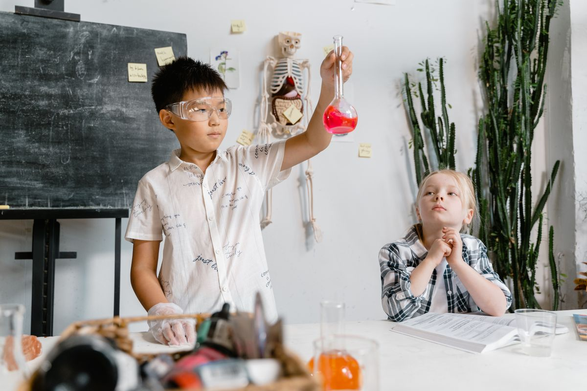
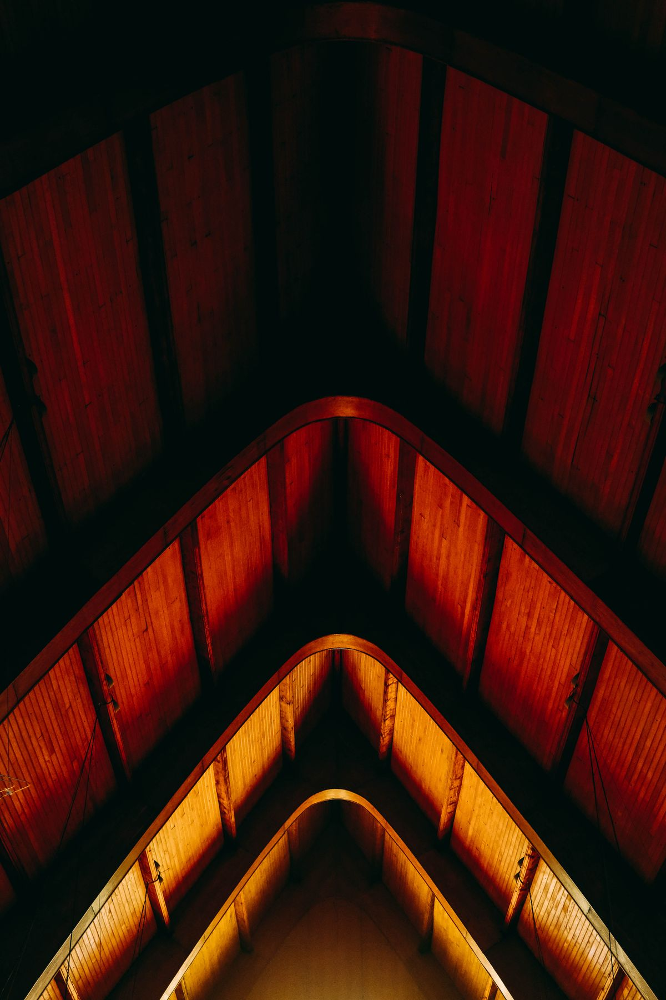

Reconnaissance à l'ONU
L'ONG Vision Citoyenne est officiellement enregistrée auprès des Nations Unies et alignée sur les Objectifs de Développement Durable, notamment l'ODD 6 (Eau propre et assainissement).
Eau, Hygiène et Assainissement
L'ONG Vision Citoyenne agit pour un accès durable à l'eau potable, à des latrines dignes et à de bonnes pratiques d'hygiène dans les écoles et les communautés de Côte d'Ivoire.
Une vision claire : garantir l'eau, l'hygiène et l'assainissement pour tous, à l'école comme dans la communauté.


L'ONG Vision Citoyenne œuvre pour que chaque enfant et chaque famille dispose d'un accès sûr à l'eau potable, à des latrines dignes et aux bonnes pratiques d'hygiène. Nous croyons que l'eau et l'assainissement sont la base de la santé, de la dignité et de la réussite scolaire.
Nous construisons des points d'eau et des latrines, formons les comités de gestion et menons des campagnes de sensibilisation à l'hygiène dans les écoles et les communautés, avec transparence et proximité.
Un monde où chaque école et chaque communauté dispose d'eau potable et d'un assainissement digne.
Améliorer durablement l'accès à l'eau, à l'hygiène et à l'assainissement (WASH) au service de la santé et de l'éducation.
Construire des latrines dignes et séparées dans les écoles pour offrir aux élèves un cadre sain et sûr.
Dignité, durabilité, transparence et engagement des communautés.
L'ONG Vision Citoyenne est officiellement reconnue par les Nations Unies et collabore avec des institutions nationales et internationales engagées pour l'eau, l'hygiène et l'assainissement.
L'ONG Vision Citoyenne est officiellement enregistrée auprès des Nations Unies et alignée sur les Objectifs de Développement Durable, notamment l'ODD 6 (Eau propre et assainissement).
Engagement au sein du Programme d'Appui au Secteur de l'Eau et de l'Assainissement (PASEA) pour améliorer l'accès à l'eau potable et à l'assainissement dans les écoles et les communautés.
Des engagements concrets, menés avec nos partenaires, au service de l'eau, de l'hygiène et de l'assainissement.
L'ONG Vision Citoyenne participe au Programme d'Appui au Secteur de l'Eau et de l'Assainissement (PASEA). Ce projet renforce l'accès à l'eau potable et à l'assainissement dans les écoles et les communautés rurales de Côte d'Ivoire, en renforçant la gouvernance du secteur et l'engagement communautaire.
En coursL'ONG Vision Citoyenne agit aux côtés d'institutions nationales et internationales, engagées pour l'eau, l'hygiène et l'assainissement.

Institution internationale de référence, avec laquelle l'ONG est engagée pour les Objectifs de Développement Durable, notamment l'ODD 6.

Ministère de Côte d'Ivoire chargé de la politique nationale en matière d'hydraulique, d'accès à l'eau potable, d'assainissement et de salubrité.

Institut international basé à New York, engagé pour la paix, la sécurité, les droits humains et le développement durable.
Nous agissons pour l'eau, l'hygiène et l'assainissement là où les besoins sont les plus grands.
Forages, puits, réseaux et points d'eau pour approvisionner écoles et communautés en eau saine.
Construction de latrines dignes et séparées dans les écoles et gestion des eaux usées.
Sensibilisation au lavage des mains, dispositifs de lavage et éducation à l'hygiène.
Programmes eau-hygiène-assainissement dans les écoles pour la santé et la réussite des élèves.
Accompagnement des filles : sensibilisation, kits et installations adaptées pour rester à l'école.
Formation des comités de gestion de l'eau et pérennisation des ouvrages par les communautés.
Images de nos actions et de nos partenaires sur le terrain. Cliquez sur une photo pour l'agrandir.
Chaque contribution finance directement nos ouvrages d'eau et d'assainissement sur le terrain. Ensemble, allons plus loin.
Retrouvez ici les activités et publications de notre ONG, publiées en direct sur notre page Facebook officielle.
Communautés, enseignants et partenaires racontent l'impact de l'eau et de l'hygiène au quotidien.
Depuis l'installation du point d'eau, les enfants ne manquent plus l'école pour aller chercher de l'eau.
Les latrines séparées ont redonné confiance aux filles, qui restent en classe toute la journée.
Notre comité gère l'ouvrage ensemble : c'est notre santé, c'est notre fierté.
Donnez de votre temps et de vos compétences pour l'eau, l'hygiène et l'assainissement.

Une question, un partenariat ? Nous vous répondrons rapidement.
Soutenez nos actions WASH ou rejoignez nos équipes de bénévoles sur le terrain.